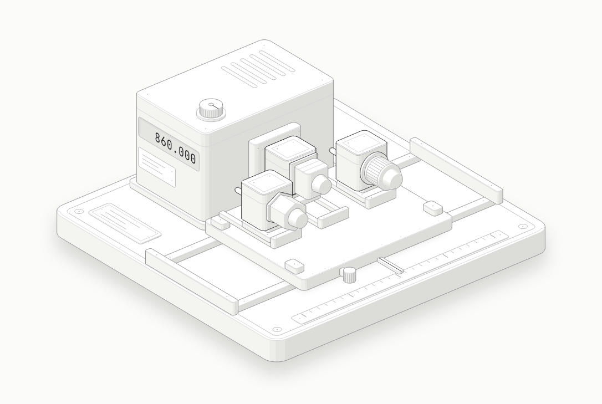
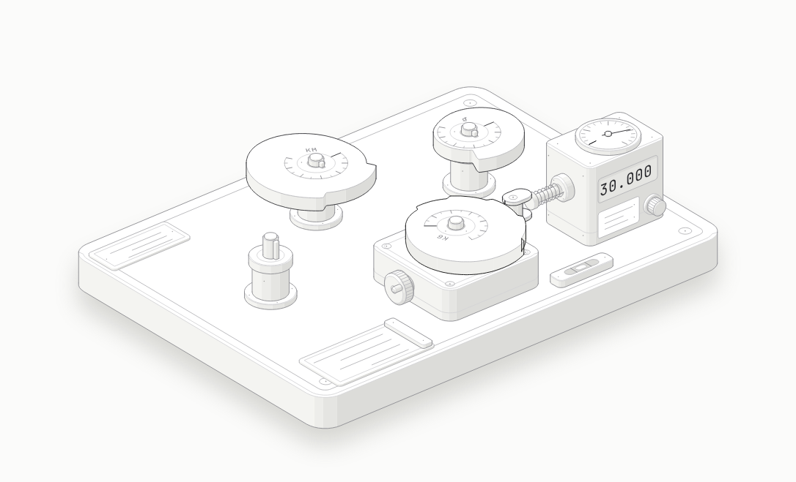
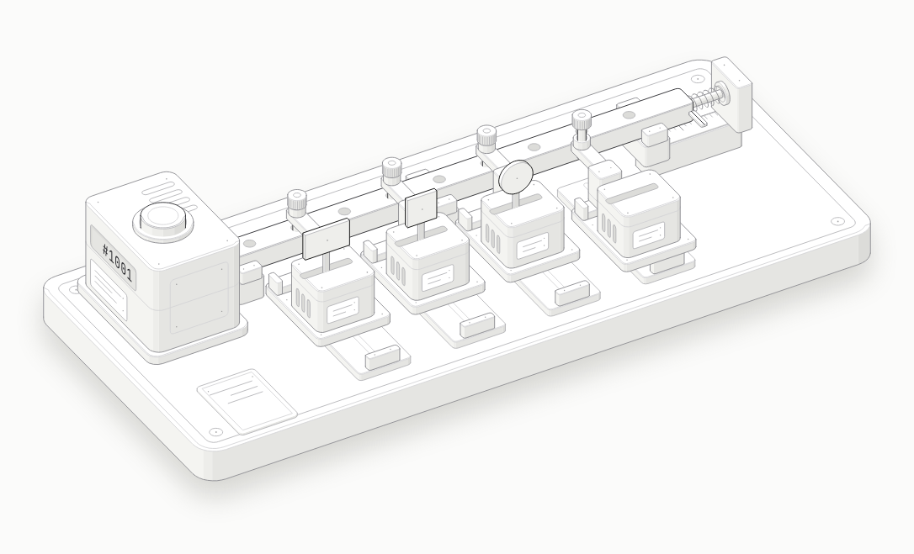
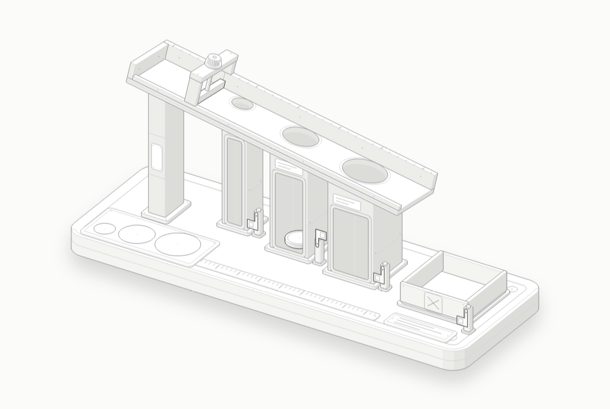
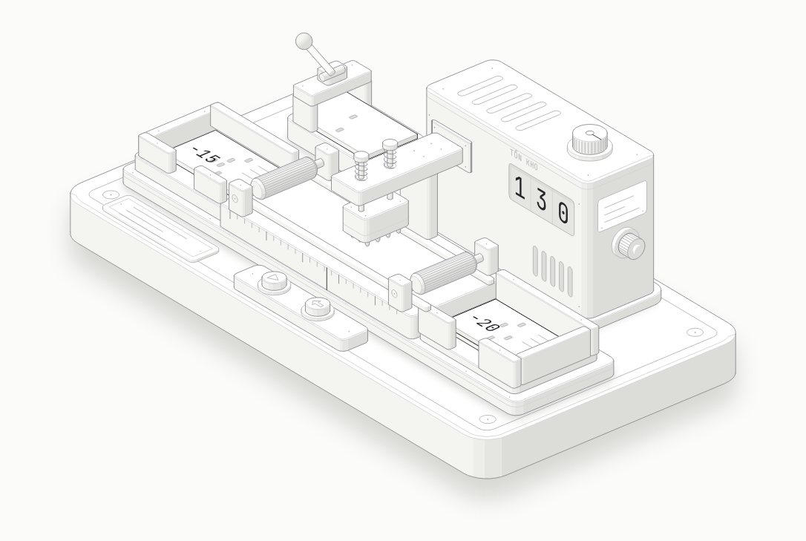
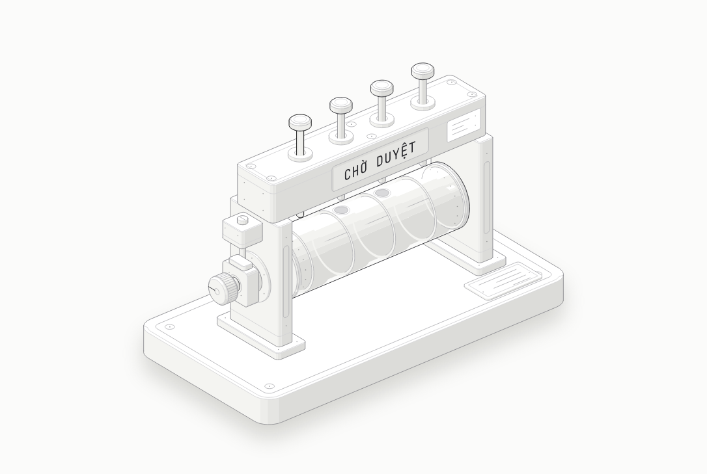
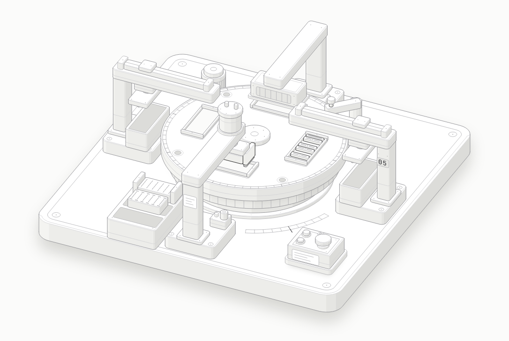

Module
Design patterns
23 pattern kinh điển của nhóm Gang of Four, chia ba nhóm theo việc chúng giải quyết. Mỗi bài là một cỗ máy tương tác mà cách nó chạy chính là pattern, kèm một bài toán backend quen thuộc, phiên bản code trước và sau khi áp dụng, viết bằng Python và TypeScript, chạy được.
- 7 / 14 bài của đợt 1 đã có
- ★★★ hay gặp trong backend
- ★★★ ít gặp
Creational Tạo object
Tách việc tạo object ra khỏi chỗ dùng nó, để đổi cách tạo mà không sửa code gọi.
-
Factory Method★★★
Giao việc tạo object cho một hàm hoặc lớp con; code gọi chỉ biết interface.
Đợt 1 · sắp có -
Builder★★★
Lắp một object phức tạp từng bước, như một query builder.
Đợt 1 · sắp có -
Singleton★★★
Chỉ một instance cho cả hệ thống; ngày nay thường để DI container lo, và dễ thành anti-pattern.
Đợt 1 · sắp có -
Abstract Factory★★★
Tạo cả một họ object luôn đi cùng nhau.
Đợt 2 -
Prototype★★★
Tạo object mới bằng cách clone một mẫu có sẵn.
Đợt 2
Structural Ghép object
Ghép các lớp và object thành cấu trúc lớn hơn mà vẫn giữ từng phần đơn giản.
-
Adapter

Mở bài ★★★Bọc một interface lạ thành interface hệ thống đang chờ: nhiều ngân hàng, một chuẩn giao dịch.
-
Decorator★★★
Bọc thêm hành vi (cache, log, retry) mà không sửa lớp gốc.
Đợt 1 · sắp có -
Facade★★★
Một cửa đơn giản che cả một hệ con phức tạp.
Đợt 1 · sắp có -
Proxy★★★
Đứng thay object thật để tải lười, cache hoặc kiểm quyền.
Đợt 1 · sắp có -
Composite★★★
Cây bộ phận và tổng thể được xử lý như nhau: task, phase, project.
Đợt 1 · sắp có -
Bridge★★★
Tách hai chiều biến đổi độc lập, như kênh gửi và loại thông báo.
Đợt 2 -
Flyweight★★★
Dùng chung phần dữ liệu bất biến để tiết kiệm bộ nhớ.
Đợt 2
Behavioral Phối hợp giữa các object
Chia trách nhiệm và cách các object gọi nhau, để thêm hành vi mà không sửa phần đang chạy.
-
Strategy

Mở bài ★★★Đổi thuật toán lúc chạy: cách tính phí, cách xử lý từng loại sự kiện.
-
Observer

Mở bài ★★★Một bên phát sự kiện, nhiều bên nghe mà không cần biết nhau.
-
Chain of Responsibility

Mở bài ★★★Chuỗi mắt xử lý; mỗi mắt quyết định cho đi tiếp hay dừng, như middleware.
-
Command

Mở bài ★★★Gói yêu cầu thành object để xếp hàng, retry hoặc hoàn tác, như job trong queue.
-
State

Mở bài ★★★Hành vi đổi theo trạng thái hiện tại: luồng phê duyệt, vòng đời đơn hàng.
-
Template Method

Mở bài ★★★Khung thuật toán cố định, chỉ vài bước được thay.
-
Iterator★★★
Duyệt một tập hợp mà không lộ cấu trúc bên trong.
Đợt 2 -
Mediator★★★
Các bên không gọi nhau trực tiếp mà qua một trung gian.
Đợt 2 -
Memento★★★
Chụp lại trạng thái để khôi phục sau.
Đợt 2 -
Interpreter★★★
Đánh giá một ngôn ngữ biểu thức nhỏ, như điều kiện phân quyền.
Đợt 2 -
Visitor★★★
Thêm thao tác lên một cây object mà không sửa các lớp.
Đợt 2